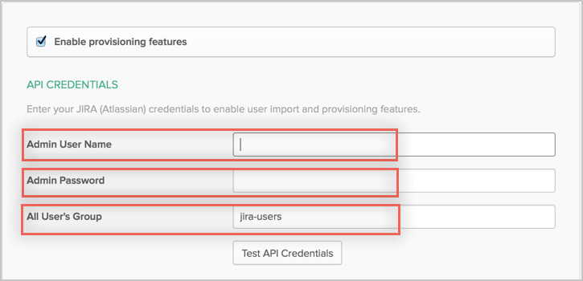
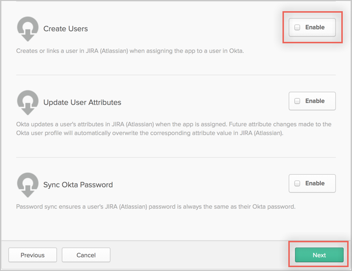

This guide provides the steps required to configure Provisioning for JIRA Cloud.
Okta's JIRA Cloud integration supports the following JIRA version 7 products, whether you are using one, or a combination of these JIRA products:
JIRA Core
JIRA Software
JIRA Service Desk
The JIRA Cloud application supports the following features:
Push new users
New users created through OKTA are also created in the third party application.
Push profile update
Updates made to the user's profile through OKTA are pushed to the third party application.
Push password update
Changes made to the user's password are pushed to the third party application.
Import new users
New users created in the third party application are downloaded and turned in to new AppUser objects, for matching against existing OKTA users.
Import profile updates
Updates made to a user's profile in the third party application are downloaded and applied to the profile fields stored locally in OKTA. If the app is the system of record for the user, changes made to core profile fields (email, first name, last name, etc) are applied to the Okta user profile. If the app is NOT the system of record for the user, only changes made to app-specific fields are applied to the local user profile.
Group Push
Groups and their members can be pushed to remote systems. See Using Group Push for more details.
Once you have selected Enable provisioning features, configure your provisioning settings as follows:
Admin User Name: Enter the admin username that has rights for user management.
Admin Password: The password for the admin user.
All User’s Group: A group name, from which users are imported from remote side.

Scroll down and Enable your required Provisioning Features.

Click Next to proceed to the Assign to People tab.
On the Assign to People tab, you can assign any existing OKTA users to the application.
Click Next to complete provisioning setup.
JIRA Cloud does not support User's Schema Discovery.